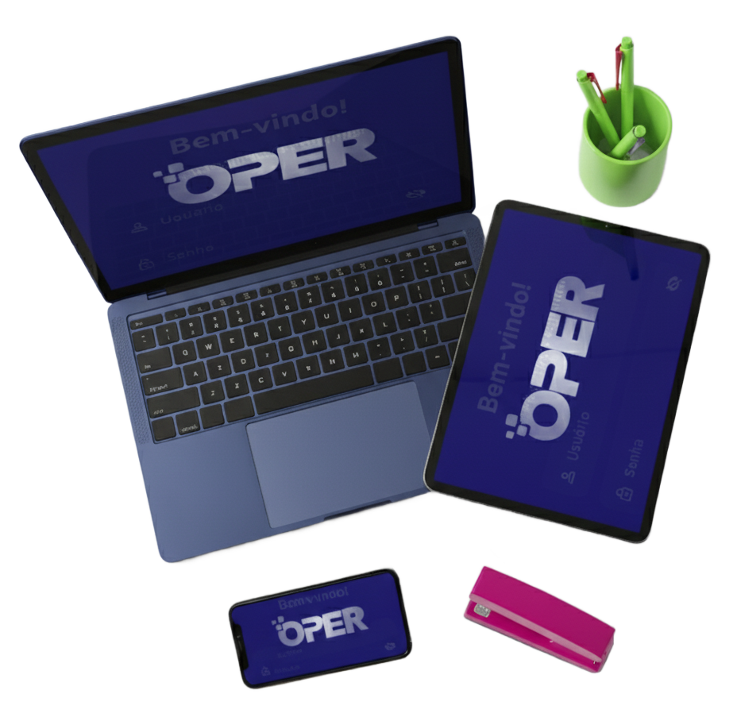
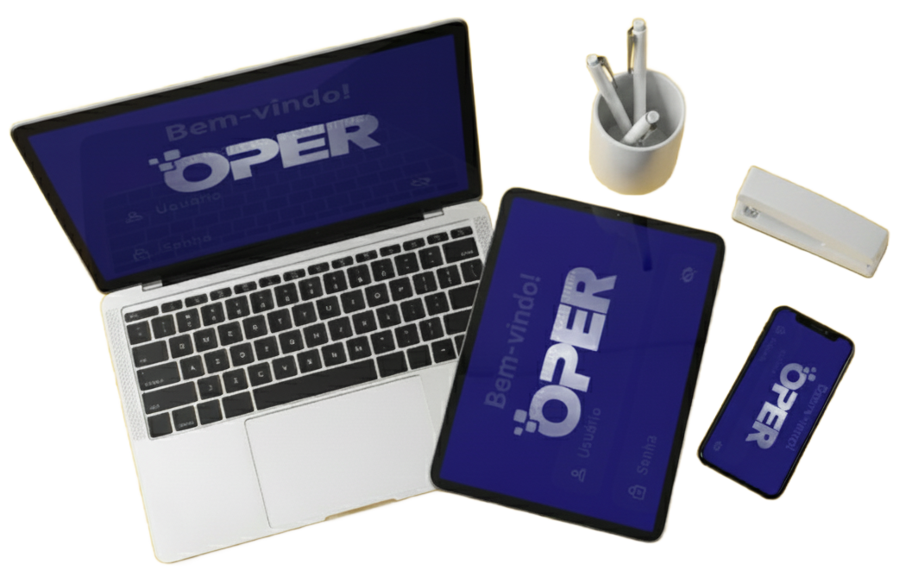

Tudo Aqui!
CMMS Inteligente
& Manutenção Digital
Eleve o Tempo Médio Entre Falhas (MTBF), prolongue a vida útil dos seus ativos e reduza o Tempo Médio para Reparo (MTTR) com o a OPER.
Checklists inteligentes, ordens de serviço rastreáveis, histórico completo de falhas e relatórios auditáveis para gestão de manutenção digital eficiente.